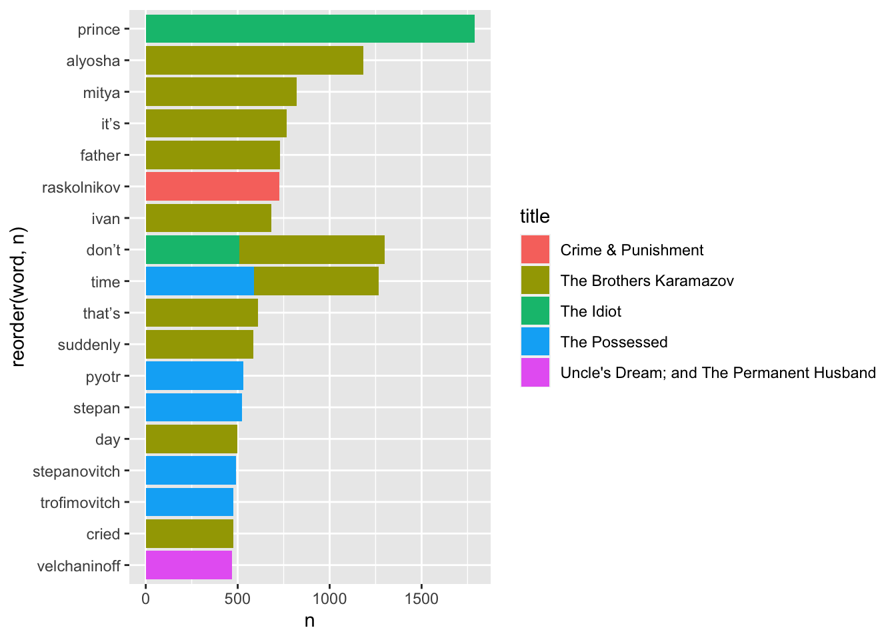
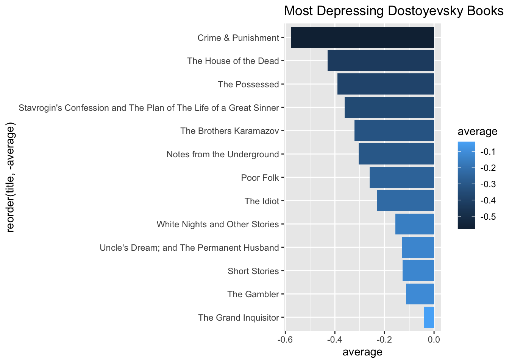
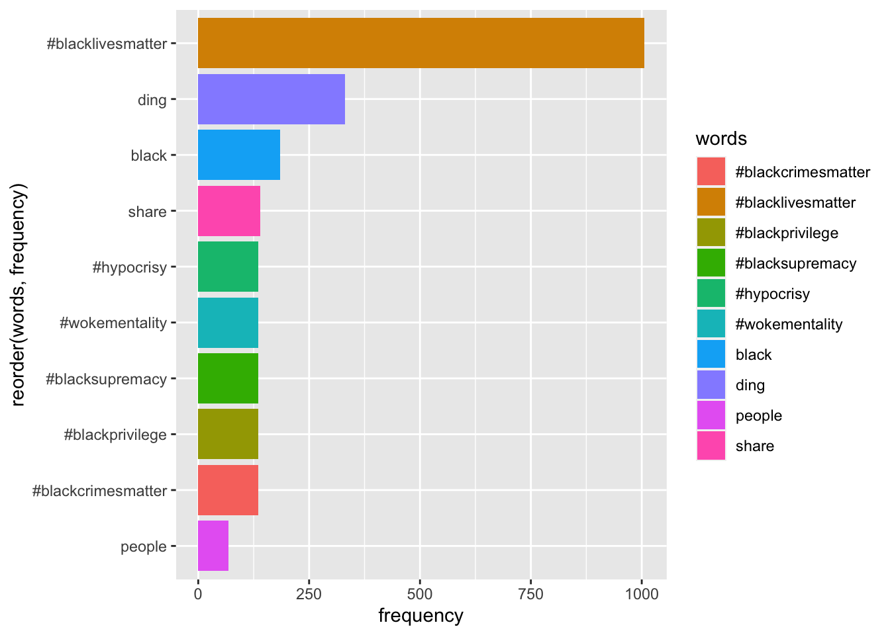
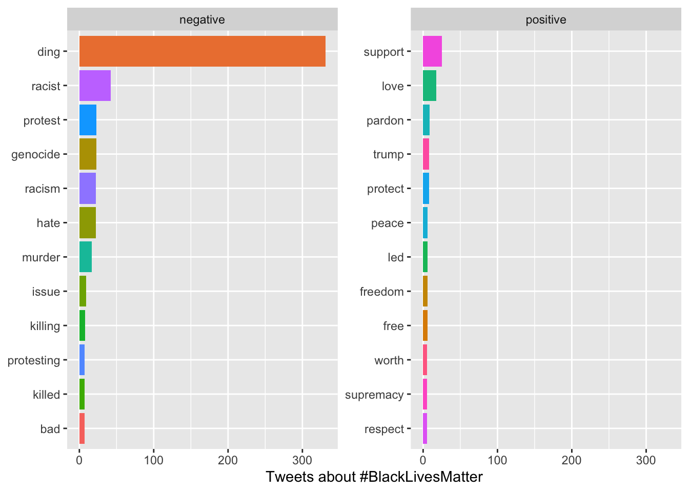
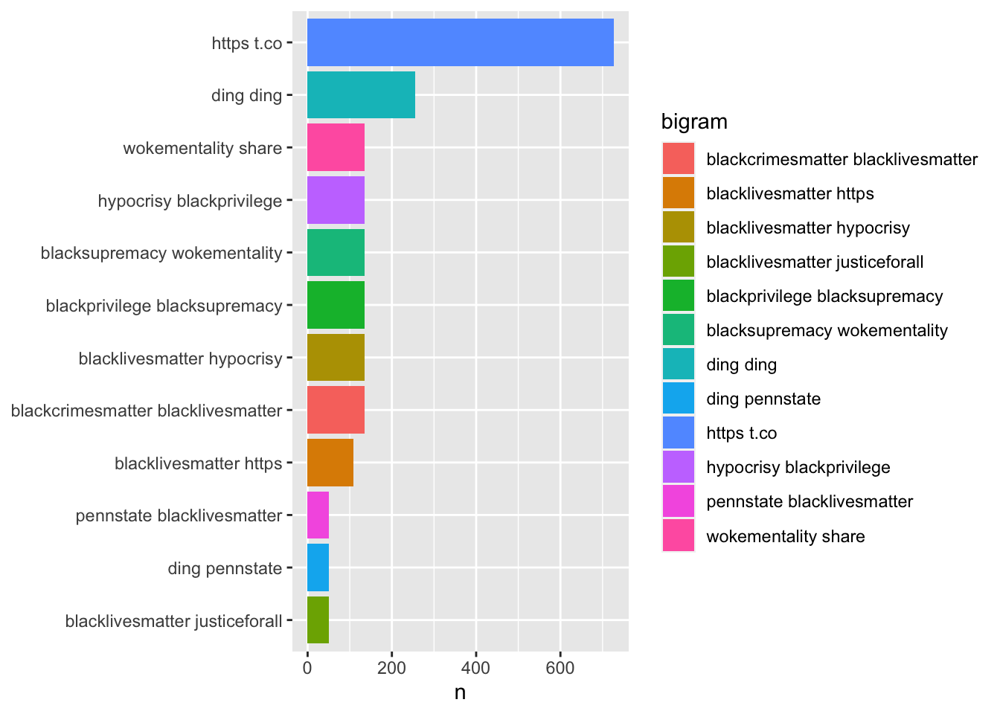
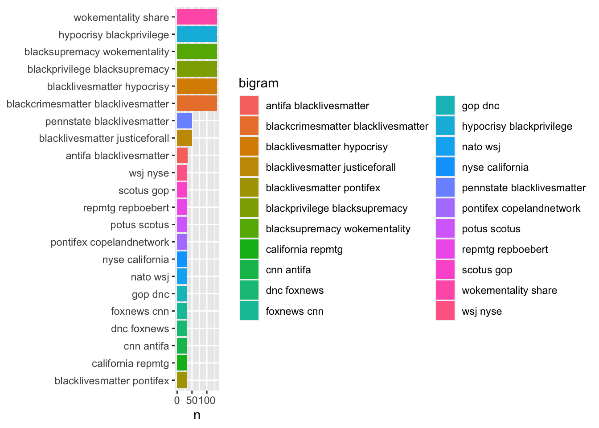
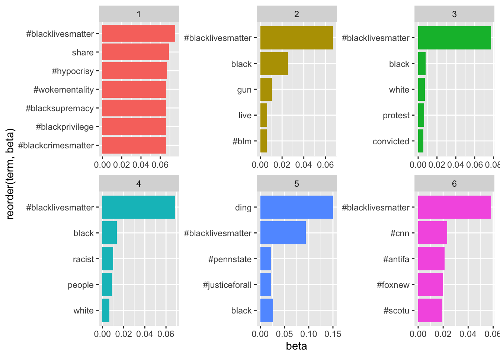

Chapter 7 Text Analysis
7.1 Basic Text Analysis
Let’s use our text analysis on works on literature - we’ll look for patterns in the greatest works by Dostoevsky, but feel free to use the same technique to explore any other author or text.
Keep in mind, the more text content you analyze, the more accurate your overall results should be. If I looked at the three greatest books by Dostoevsky, I’d potentially find a lot - but my methodology would only allow for me to apply those results to a conclusion on those three books, not any others - much less all of an author’s work. If I want to make grand claims about how Dostoevsy writes, I need to analyze as much of his work as possible. Ideally, we could set a high bar for primary information, which others could also use if duplicating our research: something like the ‘10 most popular books by Dostoevsky.’ How would we determine that?
Feodor Dostoevsky wrote 11 novels in his life, and five seem to be recognized as his greatest works, according to many lists online. Do we analyze all 11, or just the 5 ‘best?’ Do we include his short stories and novellas? Again, the more data the better - and also, after initially loading the data, there’s really no extra work involved in adding more books to the project. So add them.
And why Dostoevsky? Why no analyze the Harry Potter books? Well, Feodor is dead, and his works are in the public domain - which means we can connect to the website gutenberg.org and download copies of his books for free. We can’t do that with Harry Potter, as those books are copyrighted. We could still attempt to find and load that data, but chances are it’d be very messy and hard to analyze if someone did the text conversion themselves. In the case of very popular works like Harry Potter or Hamilton, megafans have created clean data for text analysis and posted it on GitHub. But I’ll stick with Dostoevsky.
If you explore gutenberg.org, you’ll find hundreds of books in the public domain available for download. Each book has a number associated with it, most easily found in the URL when looking at a particular novel. I’m going to load Dostoevsky’s books using the Gutenbergr package and these numbers.
library(tidyverse)
# install.packages('gutenbergr')
library(gutenbergr)
gutenberg_works(author == "Dostoyevsky, Fyodor") %>%
View()OK, there they are! While there are 12 results, not all of them are novels - we also have some short story collections. Let’s include them all, and to make sure we do, here’s an index of all Dostoevsky books on gutenberg.org:
Now to download them as .txt files. Note that I use the ‘mutate’ function of dplyr to add a column with the name of each book - this is so, when we merge all of the books together into one big ‘corpus,’ we can still figure out which book the text came from.
This is a lot of code, but we’re just loading all of these books into R: lots of repetition.
crime <- gutenberg_download(2554, mirror = "http://mirrors.xmission.com/gutenberg/") %>%
mutate('title' = "Crime & Punishment")
brothers <-gutenberg_download(28054, mirror = "http://mirrors.xmission.com/gutenberg/") %>%
mutate('title' = "The Brothers Karamazov")
notes <-gutenberg_download(600, mirror = "http://mirrors.xmission.com/gutenberg/") %>%
mutate('title' = "Notes from the Underground")
idiot <-gutenberg_download(2638, mirror = "http://mirrors.xmission.com/gutenberg/") %>%
mutate('title' = "The Idiot")
demons <-gutenberg_download(8117, mirror = "http://mirrors.xmission.com/gutenberg/") %>%
mutate('title' = "The Possessed")
gambler <-gutenberg_download(2197, mirror = "http://mirrors.xmission.com/gutenberg/") %>%
mutate('title' = "The Gambler")
poor <-gutenberg_download(2302, mirror = "http://mirrors.xmission.com/gutenberg/") %>%
mutate('title' = "Poor Folk")
white <-gutenberg_download(36034, mirror = "http://mirrors.xmission.com/gutenberg/") %>%
mutate('title' = "White Nights and Other Stories")
house <-gutenberg_download(37536, mirror = "http://mirrors.xmission.com/gutenberg/") %>%
mutate('title' = "The House of the Dead")
uncle <-gutenberg_download(38241, mirror = "http://mirrors.xmission.com/gutenberg/") %>%
mutate('title' = "Uncle's Dream; and The Permanent Husband")
short <-gutenberg_download(40745, mirror = "http://mirrors.xmission.com/gutenberg/") %>%
mutate('title' = "Short Stories")
grand <-gutenberg_download(8578, mirror = "http://mirrors.xmission.com/gutenberg/") %>%
mutate('title' = "The Grand Inquisitor")
stavrogin <-gutenberg_download(57050, mirror = "http://mirrors.xmission.com/gutenberg/") %>%
mutate('title' = "Stavrogin's Confession and The Plan of The Life of a Great Sinner")7.1.1 Creating a Corpus
Now, let’s merge all of the books into one huge corpus (a corpus is a large, structured collection of text data). We’ll do this using the function rbind(), which is the easiest way to merge data frames with identical columns, as we have here.
dostoyevsky <- rbind(crime,brothers, notes, idiot, demons, gambler, poor, white, house, uncle, short, grand, stavrogin)7.1.2 Finding Common Words
So, what are the most common words used by Dostoevsky?
To find out, we need to change this data frame of literature into a new format: one that has one-word-per-row. In other words, for every word of every book, we will have a row of the data frame that indicates the word and the book the word is from. We can then calculate things like the total number of instances of a word, and the like.
This process is called tokenization, as a word is only one potential token to analyze (others include letters, bigrams, sentences, paragraphs, etc.). We tokenize our words using the tidytext package, a companion to teh tidyverse that specifically works with text data.
To tokenize our text into words, we’ll use the unnest_tokens() function of the tidytext package. Inside the function, ‘word’ indicates the token we’re specifying, and ‘text’ is the name of the column that currently contains all of the words from the books. We’ll create a new data frame called ‘d_words.’
#install.packages('tidytext')
library(tidytext)
dostoyevsky %>%
unnest_tokens(word, text) -> d_wordsIf we were to look at the most common words now - d_words %>% count(word, sort = TRUE) - we’d see a lot of words like ‘the, and, of’ - what we call ‘stop words.’ Let’s remove those, as they give no indication of emotion, and their relative frequency is uninteresting.
The tidytext package already has a lexicon of stop words that we can use for this purpose. To remove them from our corpus, we’ll perform an anti-join, which is when you merge two data frames but only keep the content that does not show up in both. All of the stop words will show up in both stop_words and d_words, and will be taken out. And then let’s count the most frequent words:
d_words %>%
anti_join(stop_words) %>%
# group_by(title) %>%
count(word, sort = TRUE) %>%
head(20) %>%
knitr::kable()## Joining, by = "word"| word | n |
|---|---|
| time | 3291 |
| day | 2245 |
| prince | 2243 |
| suddenly | 2111 |
| don’t | 1842 |
| cried | 1828 |
| eyes | 1692 |
| life | 1603 |
| looked | 1596 |
| people | 1582 |
| moment | 1566 |
| it’s | 1492 |
| love | 1389 |
| money | 1373 |
| heart | 1347 |
| house | 1286 |
| hand | 1274 |
| understand | 1204 |
| told | 1196 |
| alyosha | 1194 |
We could visualize this, but it’d be a pretty boring and uninformative bar chart. What could make it more interesting is if we kept the data on which book the words show up in.
d_words %>%
anti_join(stop_words) %>%
group_by(title) %>%
count(word, sort = TRUE) %>%
head(20) %>%
ggplot(aes(reorder(word, n),n, fill = title)) + geom_col() + coord_flip()## Joining, by = "word"
7.1.3 Bigrams
Bigrams are just collections of words that show up next to each other in a text, like ‘United States’ or ‘ice cream.’ When we count bigrams, we can also measure what word or words most frequently precedes or comes after another word. For instance, Lewis Carrol’s relative disdain for his protagonist Alice is clear when performing a bigram analysis of what words come before her name: the most frequent is poor, as in poor Alice.
To generate bigrams, we have to re-tokenize our text:
#bigrams!
dostoyevsky %>%
unnest_tokens(bigram, text, token="ngrams", n=2) -> d_bigramsWhile that creates bigrams, they are grouped together in one column of the data frame, so we can’t measure them independently.
Let’s use dplyr’s separate() function to split them into two columns:
d_bigrams %>%
separate(bigram, c("word1", "word2"), sep = " ") -> d_bigramsWe couldn’t previously remove stop words, as we’d change the order of what words follow each other in the text - rendering a bigram analysis riddled with errors. But now that our words have been collected as bigram pairs, we can remove any with stop words or NAs, or blanks:
d_bigrams %>%
filter(!word1 %in% stop_words$word) %>%
filter(!word2 %in% stop_words$word) %>%
filter(!word1 %in% NA) %>%
filter(!word2 %in% NA) -> d_bigramsNow let’s count the most common bigrams - kind of predictable results.
d_bigrams %>%
count(word1, word2, sort = TRUE) ## # A tibble: 81,207 × 3
## word1 word2 n
## <chr> <chr> <int>
## 1 pyotr stepanovitch 431
## 2 stepan trofimovitch 406
## 3 varvara petrovna 340
## 4 katerina ivanovna 310
## 5 pavel pavlovitch 283
## 6 nikolay vsyevolodovitch 247
## 7 ha ha 241
## 8 fyodor pavlovitch 215
## 9 maria alexandrovna 214
## 10 nastasia philipovna 183
## # … with 81,197 more rowsWhat’s more productive is to search for the most common words to come just before or after another word. For instance, what are the most common words to precede ‘fellow?’
d_bigrams %>%
filter(word2 == "fellow")## # A tibble: 286 × 4
## gutenberg_id title word1 word2
## <int> <chr> <chr> <chr>
## 1 2554 Crime & Punishment funny fellow
## 2 2554 Crime & Punishment funny fellow
## 3 2554 Crime & Punishment crazy fellow
## 4 2554 Crime & Punishment crazy fellow
## 5 2554 Crime & Punishment low fellow
## 6 2554 Crime & Punishment capital fellow
## 7 2554 Crime & Punishment rate fellow
## 8 2554 Crime & Punishment boastful fellow
## 9 2554 Crime & Punishment nice fellow
## 10 2554 Crime & Punishment dear fellow
## # … with 276 more rowsThat’s a little more interesting.
7.1.4 Word Clouds
It’s very easy to generate a word cloud from a very specific data frame: one with the columns ‘word’ and ‘n,’ showing word frequency. Your data frame can have other columns in it, but it needs these two in particular - and they have to be named correctly, too.
The version of wordcloud on CRAN has been riddled with an error for some time, so let’s install the development version from GitHub. In order to do this, we need to add the devtools package.
install.packages('devtools')
library(devtools)
devtools::install_github('lchiffon/wordcloud2')Let’s make a word cloud without the stop_words:
library(wordcloud2)
d_words %>%
anti_join(stop_words) %>%
count(word, sort = TRUE) %>%
wordcloud2()## Joining, by = "word"7.1.5 Sentiment
For our final analysis, we can measure sentiment from the three sentiment lexicons built into the tidytext package. They are:
Bing, for providing simple (boolean) positive/negative values of TRUE or FALSE
NRC, for assigning emotions to words beyond just positive & negative - such as trust, surprise, joy & disgust
AFINN, which ranks a word’s sentiment on a scale that goes from -5 to 5, with neutral words at 0
In order to use AFINN, we need to load one additional package:
install.packages('textdata')
library(textdata)To measure sentiment, we will once again join our data to a lexicon. In this case, we want to perform an inner_join, which is essentially the opposite of an anti_join: keep only the words that show up in both locations. As a result, we’ll throw away all of the words in the text that do not have a sentiment value.
Let’s start with Bing.
d_words %>%
anti_join(stop_words) %>%
inner_join(get_sentiments("bing")) %>%
group_by(sentiment) %>%
count() %>%
knitr::kable()## Joining, by = "word"
## Joining, by = "word"| sentiment | n |
|---|---|
| negative | 63883 |
| positive | 35217 |
There seem to be a lot more negative words than positive ones. Let’s see what some of these words are, ranked by their sentiment score - which is a part of AFINN:
d_words %>%
anti_join(stop_words) %>%
inner_join(get_sentiments("afinn")) %>%
group_by(value) %>%
count(word, sort=TRUE) %>%
head(12) %>%
knitr::kable()## Joining, by = "word"
## Joining, by = "word"| value | word | n |
|---|---|---|
| -2 | cried | 1828 |
| 3 | love | 1389 |
| 1 | god | 1013 |
| 2 | dear | 852 |
| 1 | matter | 778 |
| -1 | strange | 747 |
| -2 | poor | 730 |
| -2 | afraid | 700 |
| 2 | true | 649 |
| 1 | feeling | 633 |
| -1 | leave | 555 |
| -2 | tears | 550 |
How about using Bing to measure the positivity / negativity of each book?
d_words %>%
anti_join(stop_words) %>%
inner_join(get_sentiments("bing")) %>%
group_by(title) %>%
count(sentiment, sort=TRUE) %>%
knitr::kable()## Joining, by = "word"
## Joining, by = "word"| title | sentiment | n |
|---|---|---|
| The Brothers Karamazov | negative | 14083 |
| The Possessed | negative | 9492 |
| The Idiot | negative | 8361 |
| Crime & Punishment | negative | 8257 |
| The Brothers Karamazov | positive | 7903 |
| The Idiot | positive | 4943 |
| The Possessed | positive | 4936 |
| White Nights and Other Stories | negative | 4840 |
| The House of the Dead | negative | 4736 |
| Uncle’s Dream; and The Permanent Husband | negative | 3578 |
| Crime & Punishment | positive | 3453 |
| Short Stories | negative | 2958 |
| White Nights and Other Stories | positive | 2945 |
| The House of the Dead | positive | 2618 |
| Uncle’s Dream; and The Permanent Husband | positive | 2308 |
| Poor Folk | negative | 2085 |
| Notes from the Underground | negative | 2053 |
| Short Stories | positive | 1777 |
| The Gambler | negative | 1775 |
| Stavrogin’s Confession and The Plan of The Life of a Great Sinner | negative | 1250 |
| Poor Folk | positive | 1179 |
| Notes from the Underground | positive | 1103 |
| The Gambler | positive | 1078 |
| Stavrogin’s Confession and The Plan of The Life of a Great Sinner | positive | 630 |
| The Grand Inquisitor | negative | 415 |
| The Grand Inquisitor | positive | 344 |
OK, and let’s see at what NRC looks like:
d_words %>%
anti_join(stop_words) %>%
inner_join(get_sentiments("nrc")) %>%
# group_by(title) %>%
count(sentiment, sort=TRUE) ## Joining, by = "word"
## Joining, by = "word"## # A tibble: 10 × 2
## sentiment n
## <chr> <int>
## 1 positive 70314
## 2 negative 64890
## 3 trust 41583
## 4 fear 34716
## 5 anticipation 34419
## 6 sadness 32940
## 7 joy 30529
## 8 anger 29825
## 9 disgust 22150
## 10 surprise 19810These can all be plotted, of course:
d_words %>%
anti_join(stop_words) %>%
inner_join(get_sentiments("nrc")) %>%
group_by(title) %>%
count(sentiment, sort=TRUE) %>%
ggplot(aes(reorder(sentiment, n),n, fill = title)) + geom_col() + coord_flip()## Joining, by = "word"
## Joining, by = "word"
So, what are the most depressing Dostoevsky books? Let’s use AFINN to calculate a mean for the sentiment value per book:
d_words %>%
anti_join(stop_words) %>%
inner_join(get_sentiments("afinn")) %>%
group_by(title) %>%
#count(word, value, sort=TRUE) %>%
summarize(average = mean(value)) %>%
ggplot(aes(reorder(title, -average), average, fill=average)) + geom_col() + coord_flip() +
ggtitle("Most Depressing Dostoyevsky Books")## Joining, by = "word"
## Joining, by = "word"
7.2 A Case Study of Text Analysis of Social Media Text
In this case study, an analysis is conducted on the social media discussions of the hashtags #BlackLivesMatter, utilizing Twitter data. The initial step involves the use of Twitter APIs to gather the most recent 1000 tweets featuring the hashtag. Subsequently, the tweets are cleaned by eliminating stop words and performing stemming. The study also entails the creation of visualizations and an examination of the semantic network derived from the cleaned set of 1000 tweets.
7.2.1 Using APIs for Data Collection
#Load required libraries
library(rtweet)
library(tidyverse)
library(tidytext)
#Before collecting the data, you will need to create a token as illustrated in chapter 6.
tweets <- search_tweets(q = "#BlackLivesMatter", n = 1000, lang = "en", include_rts = FALSE)##
Downloading [=======>---------------------------------] 20%
Downloading [===========>-----------------------------] 30%
Downloading [===============>-------------------------] 40%
Downloading [===================>---------------------] 50%
Downloading [========================>----------------] 60%
Downloading [============================>------------] 70%
Downloading [================================>--------] 80%
Downloading [====================================>----] 90%
Downloading [=========================================] 100%# You can save the collected tweets as a csv file on your computer
# write.csv(tweets, "~/your_path/tweets.csv", row.names=FALSE)
#The collected tweets has 90 variables. We only look into the first five variables
tweets <- tweets[,1:5]7.2.2 Removing Stop Words & Stemming
In a tweet, you may come across several unique symbols like http, rt, and t.co. When removing such symbols, we decided to keep “#” and “@” to indicate mentions and hashtags used in the tweets.
#Keep special symbols
reg_words <- "([^A-Za-z_\\d#@']|'(?![A-Za-z_\\d#@]))"Afterwards, we eliminate stop words that are usually prevalent in English, such as “the,” “of,” and “to,” among others. Additionally, we performed stemming by dealing with plural endings to reduce a word to its root form. You can find various methods of stemming at this link: https://smltar.com/stemming.html.
tweets_clean <- tweets %>%
mutate(text = str_replace_all(text, "https://t.co/[A-Za-z\\d]+|http://[A-Za-z\\d]+|&|<|>|RT|https", "")) %>%
unnest_tokens(word, text, token = "regex", pattern = reg_words) %>%
anti_join(stop_words) %>%
mutate(words = case_when(
str_detect(word, "sses$") ~
str_replace(word, "sses$", "ss"),
str_detect(word, "ies$") ~
str_replace(word, "ies$", "y"),
str_detect(word, "ss$") ~
word,
str_detect(word, "s$") ~
str_remove(word, "s$"),
TRUE ~ word))## Joining, by = "word"In the presented case study, stemming is performed by addressing plural endings. However, it may be necessary to employ a different stemming approach depending on the situation. For instance, one might seek to convert various variations of “support” to its base form.
#mannually stemming
tweets_clean <- tweets_clean %>%
mutate(words = str_replace(words, "supporting", "support")) %>%
mutate(words = str_replace(words, "attacking", "attack"))Now, Let’s first count the word frequency
tweets_frequency <- tweets_clean %>%
count(words, sort = TRUE)
#change colname "n" to "frequency"
colnames(tweets_frequency)[2] <- "frequency"
#remove some meaningless words if needed
tweets_frequency<-tweets_frequency[!(tweets_frequency$words=="amp"),]7.2.3 Frequency Analysis
Now, let’s visualize the frequency
tweets_frequency %>%
top_n(10) %>%
ggplot(aes(reorder(words, frequency),frequency, fill = words)) +
geom_col() +
coord_flip()## Selecting by frequency
#visualize word cloud
library(wordcloud2)
# Change the shape:
wordcloud2(tweets_frequency, size = 2.8, shape = 'star')7.2.4 sentiment analysis
Now, let’s use “bing” measure the positivity / negativity
tweets_sentiment <-
tweets_clean %>%
inner_join(get_sentiments("bing")) %>%
count(words, sentiment, sort = TRUE) %>%
ungroup()## Joining, by = "word"# you also can export sentiment analysis results use write.csv
# visualizations
tweets_sentiment %>%
group_by(sentiment) %>%
top_n(10) %>%
ggplot(aes(reorder(words, n),n, fill = words)) +
geom_col(show.legend = FALSE) +
facet_wrap(~sentiment, scales = "free_y") +
labs(y = "Tweets about #BlackLivesMatter",
x = NULL) +
coord_flip()## Selecting by n
Based on the visualization, it appears that the word “ding” has been identified as a highly frequent negative term. If you disagree with this conclusion, you may choose to remove “ding” from the sentiment results.
tweets_sentiment <- tweets_sentiment %>%
filter(!(words == "ding"))
#redo sentiment visualizations
tweets_sentiment %>%
group_by(sentiment) %>%
top_n(10) %>%
ggplot(aes(reorder(words, n),n, fill = words)) +
geom_col(show.legend = FALSE) +
facet_wrap(~sentiment, scales = "free_y") +
labs(y = "Tweets about #BlackLivesMatter",
x = NULL) +
coord_flip()## Selecting by n
7.2.5 Bigram Analysis
We can also provide a list of the most commonly occurring bigrams in this case study.
tweets_2 <- tweets %>%
unnest_tokens(bigram, text, token = "ngrams", n = 2)
bigram_separated <- tweets_2 %>%
separate(bigram, c("word1", "word2"), sep = " ")
bigram_filtered <- bigram_separated %>%
filter(!word1 %in% stop_words$word) %>%
filter(!word2 %in% stop_words$word)
bigram_united <- bigram_filtered %>%
unite(bigram, word1, word2, sep = " ")
# calculate the frequency of bigrams
bigram_counts <- bigram_united %>%
count(bigram, sort = TRUE)
# bigram visualization
bigram_counts %>%
top_n(10) %>%
ggplot(aes(reorder(bigram, n),n, fill = bigram)) +
geom_col() +
xlab(NULL) +
coord_flip()## Selecting by n
Upon reviewing the visualizations, it seems appropriate to exclude https, t.co, and ding from the report.
bigram_filtered_2 <- bigram_filtered %>%
filter(!word1 %in% c("https", "t.co", "ding")) %>%
filter(!word2 %in% c("https", "t.co", "ding"))
bigram_united <- bigram_filtered_2 %>%
unite(bigram, word1, word2, sep = " ")
# calculate the frequency of bigrams
bigram_counts <- bigram_united %>%
count(bigram, sort = TRUE)
# bigram visualization
bigram_counts %>%
top_n(10) %>%
ggplot(aes(reorder(bigram, n),n, fill = bigram)) +
geom_col() +
xlab(NULL) +
coord_flip()## Selecting by n ### topic modeling
Topic modeling is a computational technique used to extract and identify topics or themes present in a collection of text documents. It is often used in natural language processing (NLP) and text mining applications to analyze large amounts of unstructured data.
The most commonly used approach to topic modeling is Latent Dirichlet Allocation (LDA), which assumes that each document is a mixture of several latent topics, and each topic is a distribution of words. By analyzing the co-occurrence of words in the documents, LDA can infer the underlying topics and their relative importance.
However, topic modeling does have some limitations. The accuracy of the results depends on the quality of the text data and how relevant it is to the research question. Also, it can be hard to understand the results if the topics are not clear. Finally, topic modeling cannot tell us about the feelings or tone of the text, which can be important for some uses.
Despite these limits, topic modeling is still very useful in NLP and text mining. It is used for many things like analyzing social media, doing market research, and understanding content.
# find each ID's word counts
tweets_frequency_ID <- tweets_clean %>%
count(user_id, words, sort = TRUE)
# find each ID's word total counts
total_tweets_frequency_ID <- tweets_frequency_ID %>%
group_by(user_id) %>%
summarize(total = sum(n))
tweets_frequency_ID <- left_join(tweets_frequency_ID, total_tweets_frequency_ID)## Joining, by = "user_id"In R, the left_join() function is used to merge two data frames based on a common column, where the result contains all the rows of the left data frame and only the matching rows of the right data frame.
Now, let’s create a document term matrix. In R, a Document-Term Matrix (DTM) is a matrix that represents the frequency of terms that occur in a collection of text documents. Each row in the matrix represents a document, and each column represents a term. The values in the matrix are the frequency of each term in each document.
#create document term matrix
dtm <- tweets_frequency_ID %>%
cast_dtm(user_id, words, n)
#topic model with 10 topics
library(topicmodels)
lda <- LDA(dtm, k = 10, control = list(seed = 12345))
topics <- tidy(lda, matrix = "beta")In the above code, dtm is the input document term matrix, and k = 10 specifies the number of topics that the model should generate. The control argument is a list of additional parameters that can be passed to the LDA() function. In this case, the seed = 12345 parameter is used to set a random seed, which ensures that the results will be reproducible.
In the context of topic modeling in R, the tidy() function from the tidytext package can be used to convert a fitted LDA (Latent Dirichlet Allocation) model into a tidy format, which makes it easier to manipulate and analyze the model results.
In the context of Latent Dirichlet Allocation (LDA), the beta value is a hyperparameter that controls the distribution of words within topics. Specifically, it determines the strength of the prior belief that a particular word will be associated with a particular topic.
Let’s visualize the top terms in the top ten topics.
top_terms <- topics %>%
group_by(topic) %>%
top_n(5, beta) %>%
arrange(topic, -beta)
# visualization of topics
top_terms %>%
ggplot(aes(reorder(term, beta),beta, fill = factor(topic))) +
geom_col(show.legend = FALSE) +
facet_wrap(~ topic, scales = "free") +
coord_flip()  You may find this article helpful in determining how to decide on the number of topics: https://cran.r-project.org/web/packages/ldatuning/vignettes/topics.html
7.4 Assignment
Select (a) unique hashtag(s) for a client of your choice (e.g., Airbnb: #airbnb, #airbnbexperience).
Step 1 Using your Twitter APIs to collect the most recent 1000 tweets containing the hashtag(s).
Step 2 Clean the tweets in terms of Removing Stop Words and Stemming
Step 3 Conduct text Analysis including Frequency Analysis, Sentiment Analysis, and Topic Modeling. Visualize the top 10 most frequent words, positive words, negative words, and top 10 topics.
Step 4 Create, visualize and analyze the semantic network of the collected Twitter conversations. The visualization should reflect the modularity analysis result. Report the top 10 words with the greatest degree, eigenvector, centralities, and betweenness centralities.
Step 5 Based on the results of text analysis and visualizations, write a short story in 500 words with an interesting title. Finally, attach your visualizations of the top 10 most Frequent words, positive words, negative words, top 10 topics, and network visualization in the end of your story. Save your word document as .pdf for submission.